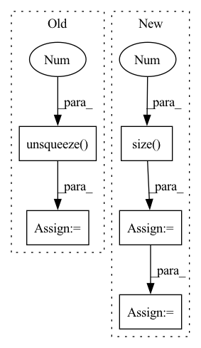

Pattern ID :34392

Before Change
probs = probs * encoder_masks
normalization_factor = probs.sum(-1, keepdim=True) + 1e-12
probs = probs / normalization_factor
probs = probs.unsqueeze(1)
context = probs.bmm(encoder_outputs)
return context, probs
After Change
probs [batch_size, tgt_len, src_len]
device = hidden_states.device
tgt_len = hidden_states.size(1)
batch_size, src_len, _ = encoder_outputs.size()
energy = self.score(hidden_states, encoder_outputs)
p_select = torch.sigmoid(energy + self.gaussian_noise(energy.size()).to(device))
cumprod_1_minus_p = self.safe_cumprod(1 - p_select)
if previous_probs is None:
probs = torch.zeros(batch_size, tgt_len, src_len).to(device)
probs[:, :, 0] = torch.ones(batch_size, tgt_len).to(device)
else:
probs = p_select * cumprod_1_minus_p * torch.cumsum(previous_probs / cumprod_1_minus_p, dim=-1)
encoder_masks = encoder_masks.unsqueeze(1).repeat(1, tgt_len, 1)
probs = probs * encoder_masks
normalization_factor = probs.sum(-1, keepdim=True) + 1e-12
probs = probs / normalization_factor
In pattern: SUPERPATTERN
Frequency: 3
Non-data size: 5
Instances
Fragment ID: 98651936
Project Name: rucaibox/textbox
Commit Name: 967fc58bc72f549bde3d8cba8dcd88b0bd40e138
Time: 2020-12-06
Author: lijunyi@ruc.edu.cn
File Name: textbox/module/Attention/attention_mechanism.py
M Class Name: MonotonicAttention
N Class Name: MonotonicAttention
M Method Name: soft(5)
N Method Name: soft(5)
M Parent Class: torch.nn.Module
N Parent Class: torch.nn.Module
M File Name: textbox/module/Attention/attention_mechanism.py
N File Name: textbox/module/Attention/attention_mechanism.py
M Start Line: 163
M End Line: 169
N Start Line: 162
N End Line: 175
'>
Before Change
visual_emo_vecs = self.affineVisual(text_emo_vecs)
audio_emo_vecs = self.affineAudio(text_emo_vecs)
text_emo_vecs = text_emo_vecs.unsqueeze(0).repeat(batch_size, 1, 1)
visual_emo_vecs = visual_emo_vecs.unsqueeze(0).repeat(batch_size, 1, 1)
audio_emo_vecs = audio_emo_vecs.unsqueeze(0).repeat(batch_size, 1, 1)
After Change
def forward(self, X_text, X_audio, X_visual):
// TODO: try residual connection
batch_size = X_text.size(0)
logits = None
if "t" in self.modalities:
output_text, _ = self.RNNs[0](X_text)
output_text = output_text[:, -1, :]
text_emo_vecs_origin = self.textEmoEmbs(torch.LongTensor(list(range(self.num_classes))).to(self.device))
text_emo_vecs = text_emo_vecs_origin.unsqueeze(0).repeat(batch_size, 1, 1)
text_attn_weights = self.attention(output_text, text_emo_vecs)
logits = text_attn_weights if logits is None else logits + text_attn_weights
'>
Fragment ID: 98651943
Project Name: wenliangdai/modality-transferable-mer
Commit Name: b0e565d11d6b3bf9f65fb1dcbdc8c641a2bc8054
Time: 2020-06-10
Author: wenliang.dai.1995@gmail.com
File Name: src/models/temp.py
M Class Name: EmotionEmbAttnModel
N Class Name: EmotionEmbAttnModel
M Method Name: forward(4)
N Method Name: forward(4)
M Parent Class: nn.Module
N Parent Class: nn.Module
M File Name: src/models/temp.py
N File Name: src/models/temp.py
M Start Line: 53
M End Line: 79
N Start Line: 70
N End Line: 96
'>
Before Change
query_matrix.extend(self.memory_matrix[j * self.num_prototype:, :])
query_matrix = torch.stack(query_matrix, 0)
query_matrix = query_matrix.unsqueeze(0)
response = self.cmn(att_feats[i].unsqueeze(0), query_matrix, query_matrix)
responses.append(response.squeeze(0))
responses = torch.stack(responses, 0)
After Change
//dummy_memory_matrix = self.memory_matrix.unsqueeze(0).expand(att_feats.size(0), self.memory_matrix.size(0), self.memory_matrix.size(1))
max_num_protype = max((labels[:,-1]*3 + labels[:,:-1].sum(-1))) * self.num_prototype
query_matrix = self.memory_matrix.new_zeros(att_feats.size(0), max_num_protype, self.memory_matrix.shape[-1])
cmn_masks = self.memory_matrix.new_zeros(query_matrix.shape[0], att_feats.size(1), max_num_protype)
for i in range(att_feats.size(0)):
cur_query_matrix = []
//print(labels[i])
for j in range(len(labels[i])):
if labels[i, j] == 1:
if j != len(labels[i])-1:
cur_query_matrix.extend(self.memory_matrix[j*self.num_prototype:(j+1)*self.num_prototype, :])
else:
cur_query_matrix.extend(self.memory_matrix[j * self.num_prototype:, :])
cur_query_matrix = torch.stack(cur_query_matrix, 0)
//print("111",query_matrix[i, :cur_query_matrix.shape[0], :].shape, cur_query_matrix.shape)
query_matrix[i, :cur_query_matrix.shape[0], :] = cur_query_matrix
cmn_masks[i, :, :cur_query_matrix.shape[0]] = 1
responses = self.cmn(att_feats, query_matrix, query_matrix, cmn_masks)
//embeddings = embeddings + responses
att_feats = att_feats + responses
'>
Fragment ID: 98651959
Project Name: markin-wang/xpronet
Commit Name: f1eadeb44fcd3ca935352b9cc7d30eab0fa8c753
Time: 2021-11-21
Author: cserwj@gmail.com
File Name: modules/base_cmn.py
M Class Name: BaseCMN
N Class Name: BaseCMN
M Method Name: _prepare_feature_forward(5)
N Method Name: _prepare_feature_forward(5)
M Parent Class: AttModel
N Parent Class: AttModel
M File Name: modules/base_cmn.py
N File Name: modules/base_cmn.py
M Start Line: 402
M End Line: 451
N Start Line: 391
N End Line: 444